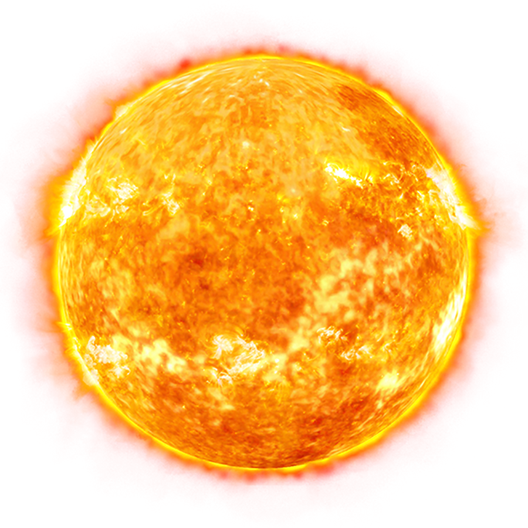

Sobre
Astronomia é a ciência que estuda o Universo,
desde a sua origem e formação aos astros que o compõe e os
fenômenos que nele ocorrem.
Originou-se a partir da observação dos astros
e de seu efeito no cotidiano do ser humano,
que desde a pré-história vem utilizando o
conhecimento astronômico acumulado durante o
tempo para desenvolver as atividades humanas.
No início, o conhecimento astronômico estava
baseado essencialmente na observação dos astros e fenômenos visíveis a olho nu (o sol, a lua, odia, a noite,
as marés, as fases da lua etc),
e se misturavam ao senso comum, à religião e
às lendas, uma vez que vários povos acreditavam
que esses astros eram deuses e que os fenômenos
originados por eles dependiam do seu humor ou
vontade.
Áreas da Astronomia
Astrobiologia:
Astrobiologia é uma recente área de pesquisa científica que estuda a vida no Universo, em conexão com o ambiente astronômico.

Astrofísica:
É o estudo das propriedades físicas dos corpos celestes, como sua densidade, temperatura, luminosidade, entre outros.

Astronomia planetária:
Estudo dos sistemas planetários, com ênfase no sistema solar, que reúne física nuclear, geologia, meteorologia etc...

Competência
Conhecer as relações entre os movimentos da Terra,
da Lua e do Sol para a descrição de fenômenos
astronômicos (duração do dia/noite, estações
do ano, fases da lua, eclipses, marés etc.).
Reconhecer ordens de grandeza de medidas
astronômicas.
Compreender os conceitos de velocidade e aceleração
associados ao movimento dos planetas associados ao
movimento dos planetas.
Perceber a relação algébrica de proporcionalidade
direta com o produto das massas e inversa com o
quadrado da distância, da Lei da Gravitação Universal
de Newton.
Reconhecer os modelos atuais do Universo (evolução
estelar, buracos negros, espaço curvo e Big-Bang).
Compreender que o tempo e o espaço são relativos,
devido à invariância da velocidade da luz.
Reconhecer o tecido espaço-tempo, sendo o tempo a
quarta dimensão.
Faculdades


Grade Curricular
| Álgebra Linear | Astrofísica | Computação | Eletromagnetismo |
| Estatística | Física | Matemática | Mecânica Quântica |
| Termodinâmica | Prática Observacional em Astronomia | Planetas e Sistemas Planetários | Cálculo Diferencial e Integral |
Nota de Corte
| Faculdade | Nota de Corte | Campus | Cidade |
|---|---|---|---|
| UFS | 679.41 | Unidade Sede | São Cristóvão - SE |
| USP | 44 | Cidade Universitária | São Paulo - SP |
| UFRJ | 764,52 | Obs do Valongo | Rio de Janeiro - RJ |
Vídeo


Trabalho Feira de Profissões
Escola: ETEC de Registro
Aluna: Ingrid Gabriela De Oliveira Barros
Orientadores: Profª Frederico Barbosa e Paloma dos Santos.